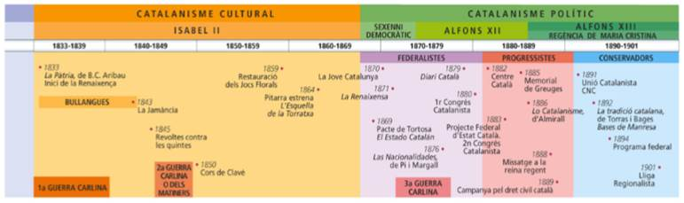

Tema 4: Els orígens i la
consolidació del
catalanisme (1833 – 1901)
Aquest segle es
caracteritza pels moviments nacionalistes: reunificacions d’Itàlia i Alemanya,
processos d’independència. Tot això vé acompanyat del Romanticisme, un moviment
que es marcava pel seu caràcter etèri, que es pot veure en l’art de l’època.
0.
Conceptes bàsics
Nacionalisme: Ideologia política que sosté el dret dels pobles a decidir sobre ells
mateixos i a defensar i exercir la seva sobirania. Una nació és un conjunt
d’individus que, a partir d’uns lligams col·lectius, tenen la voluntat de
reagrupar-se en l’interior d’unes mateixes fronteres per constituïr-se en una
comunitat nacional, és a dir, en un estat propi. Exemples: nacionalisme
català, basc, gallec, escocès.
El nacionalisme es va expandir al llarg del
segle XIX, donant lloc a moviments independentistes (enfront als imperis) o
d’unificació (italians o alemanys) en defensa de nacions lliures enfront a
l’Europa de la Santa Aliança i dels Imperis Absolutistes.
Regionalisme:
Nom amb el qual és conegut el moviment favorable a la
recuperació de la pròpia identitat cultural i política, a Catalunya, sorgit els
primers anys de la restauració borbònica el 1874. El regionalisme suposava el
manteniment de les tesis del provincialisme i una actitud més conservadora.
Contraris al centralisme unifromista castellà.
Enric Prat de la Riba fou el president de la
Lliga i el primer president de la Mancomunitat de Catalunya, el primer intent
d’autogovern de Catalunya. La obra de Prat de la Riba fou la creació del
sistema bibliotecari català i l’electrificació de Catalunya.
Francesc Cambó.
Federalisme:
Corrent de pensament polític que defensa un sistema de
pactes entre pobles, nacions o Estats per formar una unitat política més
àmplia, la qual ha d’integrar les particularitats dels grups humans que pacten
la seva federació. Alemanya i Estats Units són exemple.
Francesc Pi i Maragall: Partit Republicà
Democràtic Federal. Unió Federal Nacionaliste Republicana. Josep Maria Vallès i
Ribot.
Autonomisme:
Doctrina que defensa els principis autonòmics
Autonomia és la condició jurídico-política d’aquelles entitats o d’aquells
organismes que, dins l’estructura constitucional d’un estat, tenen facultats
per a aprovar, discutir i votar lleis pròpies.
A l’Estat espanyol, les formes d’autonomia més
desenvolupades es troben en les constitucions del 1931 amb la Segona República
i la del 1978 amb la 2a Restauració Borbònica després de la dictadura.
Estat
de les autonomies: Marc legal d’autogovern de
comunitats nacionals o regionals que formen part d’un estat. A l’Estat
Espanyol, els primers estatuts foren aprovats foren els de Catalunya i el País
Basc durant la Segona República. Derogats per la dictadura franquista, la
Constitució del 1978 tornà a reconèixer el dret a l’autonomia de les
nacionalitats i regions i regulà els procediments per a aconseguir-la.
Dret
civil català: Conjunt de normes que regulen les
relacions jurídiques privades en els més diversos aspectes de la vida des del
naixement fins les conseqüències de la mort. El dret català actual es fonamenta
en els drets històrics que el Principat de Catalunya va tenir en els temps de
la Corona d’Aragó.
Confederació:
Associació d’estats sobirans o de comunitats creada
per mitjà d’un tractat per l’assoliment d’alguns fins o propòsits comuns
predeterminats. Les confederaions sovint s’han creat per resoldre afers crítics
com ara la defensa territorial i/o la representació extrangera. Exemples són la
Corona d’Aragó (1137 -1714) i la Confederació Suïssa (actualitat)
Nacions:
Comunitat d’individus als quals uns vincles
determinats, però diversificades o bàsicament culturals d’esctructura
econòmica, amb una història comuna, donen una fesomia pròpia, diferenciada i
diferenciadora i una voluntat d’organització
Hi ha nacions-estat, estat plurinacionals,
nacions sense estat, nacions dividides en diferents estats...
Estat: Subjecte jurídic que té quatre qualificacions: una població permanent,
un territori definit, un govern i la capacitat de mantenir relacions amb altres
estats del món. No sempre és equivalent un Estat a una nació, de fet la majoria
d’estats són plurinacionals (ho reconeguin o no). Cal diferenciar un estat
d’una nació.
El Catalanisme és un moviment transversal
estructurat tant políticament com culturalment que propugna el reconeixement de
la personalitat política, històrica, lingüística, cultural i nacional de
Catalunya. Va conformar-se ideològicament en la primera dècada del segle XX com
una variant del catalanisme cultural, sorgit com a moviment cultural en la
dècada del 1830.
|
Catalanisme
polític: Moviment que propugna el reconeixement de
la personalitat política i jurídica de Catalunya. El catalanisme començarà a
manifestar-se a la primera part del segle XIX. ·
Catalanisme conservador: Nacionalisme de
base burgesa i catòlica, partidari d’una solució política moderada. ·
Catalanisme progressista: Nacionalisme de
base popular i progressista, partidari d’una solució política més radical.
Federalista. |
Catalanisme
cultural: Conjunt de doctrines i movments socials i
culturals nascuts durant el segle XIX i arribats als nostres dies, que
defensen i reivindiquen la llengua i la cultura catalanes. |
El
Decret de Nova Planta no havia impedir que la societat
catalana mantigués la manera de viure pròpia (llengua col·loquial, costums,
tradicions, organització de la família i del rteball, etc.) Hi havia
consciència del particularisme de ser diferents.
El Decret va tancar les universitats catalanes
(menys la de Cervera), va prohibir el català en tots els àmbits menys el
privat, va abolir les institucions catalanes i va fer del castellà la llengua
oficial de Catalunya.
La Renaixença va ser un moviment cultural que
pretenia la recuperació del català com a llengua de prestigi. S’emmarca en el
Romanticisme tardà europeu, i en la progressiva implantació del liberalisme a
Espanya.
Les primeres mostres de defensa popular del
particularisme català foren les bullangues d 1835 a 1843 (van reivindicar la
democratització i la descentralització de l’estat) i el carlisme (reivindicador
dels vells furs de la Corona d’Aragó i dels seus costums i tradicions)
Tot i això, es considera l’inici de la
Renaixença la publicació de l’Oda a la Pàtria (1833), de Bonaventura Carles
Aribau, i dels articles (poemes) de Joaquim Rubió i Ors al Diario de Barcelona,
a més de la reobertura de la Universistat de Barcelona i la Restauració dels
Jocs Florals.
La revalorització dels senyals d’identitat es
va extendre a la literatura, a la història, el dret i el folklore. Aquest
fenòmen ajudarà més tard a les reivindicadciosn polítiques. Paral·lelament, hi
va haver un catalanisme que refusava l’elitisme i arcaisme de la llengua culta.
Els personatges claus foren: Anselm Clavé (corals obreres), Abdó Terrades (El
rei Micomicó) i Frederic Soler (“Serfaí Pitarra” – Don Jaume el conqueridor),
gent d’idees progressites -molt actius en política- i defensors de català “que
es parla”. Valentí Almirall (Lo Catalanisme) formula per primer cop el fet
diferencial català.
Els dos moviments no es van apropar fins a la
dècada del 1870. La incorporació del català a les publicacions periodístiques i
revistes satíriques, fou un instrument important de difusió pública de la
llengua.
També autors com Jacint Verdaguer, Angel
Guimerà Narcís Oller, Víctor Català (Catarina Albert) i publicacions com la
Campana de Gràcia, Diari Català, La Renaixença, l’Esquella de la Torratxa... I
altres a Mallorca i València.
L’antecedent del catalanisme política va ser
el federalisme difós pels primers republicans com Abdó Terradas. A partir 1868,
el Partit Republicà Democràtic Federal (liderat per Francesc Pi i Maragall i Josep M. Vallès i Ribot.) va demostrar la
significativa implantació a Catalunya d’aquest ideari.
Valentí Almirall, forjat a les files federals
(va ser el portaveu del Pacte de Tortosa, una iniciativa el 1869 que
reivindicava l’Antiga Corona d’Aragó com a model federal.)
1880: Almirall va organitzar el Primer Congrés Catalanista, en un intent per
aplegar els corrents progressista i conservador que s’anaven definint al si del
catalanisme. Aquest va ser l’embrió del Centre Català de 1882, que fou una
entitat netament catalanista.
1883: El Centre Català va convocar el Segon Congrés Catalanista, on es
configura el catalanisme polític:
®
Crítica al centralisme burgués
vatalà (partits dinàstics) i aboga per abandonar-los i militar en formacions
exclusivament catalanes.
®
Cooficialitat de la llengua
catalana
®
Conservació del dret català
®
Fomentar el proteccionisme
econòmic
®
Evidenciar la divisió del
catalanisme entre els més moderats i els més progressistes.
Almirall va redactar el Memorial de Greuges,
el primer manifest polític unitari del catalanusme, que es va lliurar al rei el
març del 1885. El Memorial critica el centralisme; defensa l’harmonització
d’interessos de les diferents regions; defensa el proteccionisme i defensa el
dret civil català.
La mort del monarca en va limitar l’eficàcia,
però el manifest va aproximar la burgesia catalana a un projecte polític al
marge dels partits dinàstics.
El pensament polític d’Almirall es va recollir a Lo Catalanisme (1886),
però el seu projecte interclassista no va funcionar. La idea d’Almirall era la
d’aplegar tot el catalanisme, però fracassa per que representa un catalanisme
republicà que no atrau la burgesia.
Malgrat els esforços d’Almirall es va consolidar un catalanisme
conservador, més tradicionalista i carrincló.
Aquest corretn tenia un component ecelsiàstic molt gran
(‘vigatanisme’), impregnat d’un carlisme residual. mEl defensave personatges
com el bisme Josep Morgades, el canonge Jaume Colell i el Mossèn Cinto
Verdaguer.
El bisbe de Vic, Josep Torras i Bages va sentenciar a La tradició catalana que ‘l’esperit de
Catalunya reposa en la família, la propietat i la religió’
La burgesia catalanista va abandonar el projecte polític del Centre
Català i va crear la Lliga de Catalunya el 1887, a l’entorn del diari La Renaixença i de personatges com Àngel
Guimerà o Josep Puig i Cadafalch.
La lliga defensava
®
Oficialitat del català
®
Dret civil català
®
Proteccionisme econòmic
®
L’execució d’una política
exclusivament catalanista
La Lliga v acomençar una Capmanya de
defensa del Dret Català el 1889
Sense oblidar el Missatge a la Reina Regent amb
motiu de l’Exposició Universal, en la línia del memorial de Greuges.
Narcís Verdaguer. Torras i Bages. Puig i
Cadafalch. Àngel Guimerà.
El 1891, Narcís Verdaguer va voler coordinar
la Lliga de Catalunya amb els nuclis catalanistes disper sogint la Unió
Catalanista plataforma conservadora amb forta base rural.
El 1892 una assemblea de la Unió va donar llum
verda a les Bases de Manresa (Bases per a la Constitució Regional Catalana),
document que plantejava l’autogovern amb el restabliment de les institucions
catalanes d’arrels medievals. Aquestes bases són el punt de partida més efectiu
del catalanisme polític modern. Des d’aleshores, el catalanisme fou el
denominador comú per a la majoria de partits catalans.
A l’article primer diu: “La nació catalana és
la reunió dels pobles que parlen l’idioma català. El seu territori compren
Catalunya, els comtats de Rosselló, Cerdanya, el regne de València i el de
Mallorca”.
La desfeta del 98 i el fracàs del govern
regeneracionista de Silvela-Polavieja van convèncer la burgesia barcelonina de
la necessitat d’una autonomia administrativa com a alternativa a la ieficàcia
d’un govern central a mans dels partits dinàstics.
El Tancament de caixes va ser una protesta
dels botiguers dels industrials de Barcelona l’any 1899 contra els pressupostos
restrictius i la pujada d’impostos del govern de Silvela. Va consistir a donar
de baixa els establiments comercials i indústries per tal de deixar de paga la
contribució sense que fos il·legal. La protesta la va encapçalar el Dr.
Bartomeu Robert, alcalde de Barcelona, s’inicià el 20 d’octubre del 1899. Hi
han protestes populars i burgeses. Es declara l’estat de Guerra a Barcelona. Es
bombardeja Barcelona.
La protesta es va estendre per Sabadell,
Mataró. Mandresa, Vilafranca i alguns comerciants foren tancats a la presi
Es va crear la Lliga Regionalista a partir de
la Unió Regionalista, el Centre Nacional, i una escissió de la Lliga de Catalunya, presentant-se una
canadidatura conjunta (“la dels quatre presidents”) guanyant les eleccions de
1901.
Els quatre presidents eren:
®
B. Robert i Yarzabal, exalcalde i
expresident de la Societat Econòmica Barcelonina d’Amics del País.
®
A. Rusiñol i Prats, expresident
del Foment del Treball.
®
L. Domènech i Montaner,
expresident de l’Ateneu Barcelonès.
®
S, Torres i Planas, expresident de
la Lliga de Defensa Industrial i Comercial.
Aquest partit, conservador, de dretes i talant
liberal, estarà en pugna amb els republicans durant els següents 30 anys. És el
primer partit modern de l’Estat. Fa campanyes, fa el necessari per guanyar. El
diari La Veu de Catalunya va ser el seu principal òrgan de comunicació.
Monàrquic i conservador. El seu objectiu
polític era l’Autonomia Catalana.
Polavieja va publicar l’1 de setembre del 1898
una carta-manifest de to regenarcionista que se centrava en reforemes de la
Hisenda, l’Exèrcit i les administracions municipals, provincials i de Justícia,
a més de la descentralització administrativa de Catalunya.
El govern decideix convocar eleccions.
EUSKADI:
El nacionalisme basc va germinar coma reacció a la
pèrdua dels furs amb la derrota carlina del 1876 i com a expressiño d’un
incipient moviment cultural basc.
El seu gran impulsor va ser Sabino Arana,
antiliberal, ultracatòlic, tradicionalista i racista (carlí) Amb els anys es
moderarà i apostarà per la via autonomista.
GALÍCIA:
El galleguisme va topar amb l’escasa burgesia feble
que identificava la tradició amb l’arcaisme. La feina d’alguns intel·lectuals
(o Rexurdimiento) va afavorir un incipient
galleguisme polític a finals del s. XIX.
Les figures literaries essencials del
rexurdimiento van ser Rosalía de Castro, Valentín Lamas, Manuel Curros i
Eduardo Pondal.
VALÈNCIA,
ARAGÓ I ANDALUSIA Els particularismes també van
presentar-se en aquestes regions